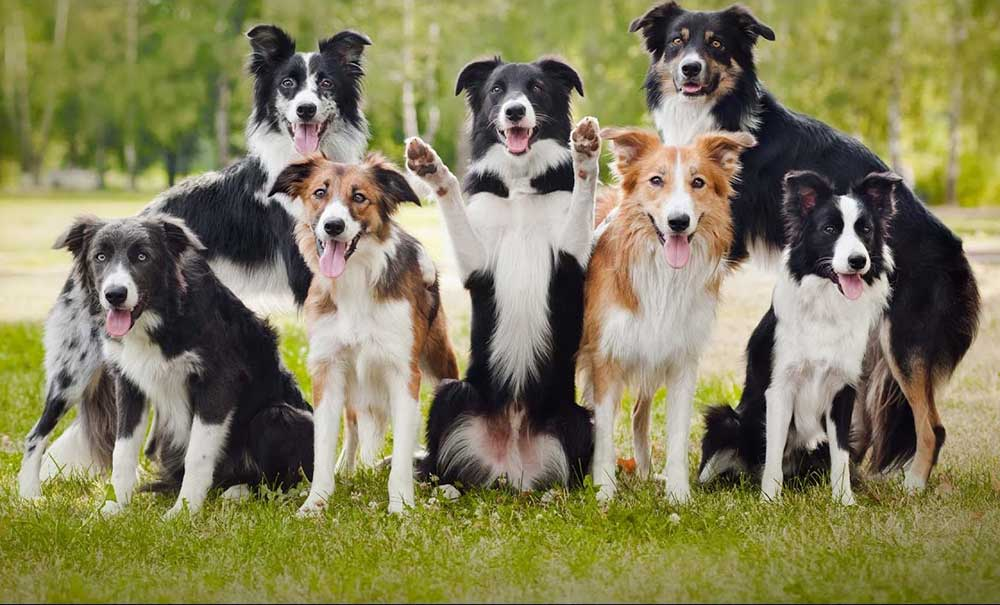

Border Collie

ประวัติสายพันธุ์
สุนัขสายพันธุ์ บอร์เดอร์ คอลลี่ (Border Collie) มีเชื้อสายที่สืบทอดมายาวนานเกือบเท่ากับมนุษยชาติ เมื่อหลายศตวรรษก่อน ในภูมิประเทศระหว่างอังกฤษกับสกอตแลนด์ซึ่งครั้งหนึ่งเคยเป็นที่รู้จักกันในนาม Anglo-Scottish border มีคนเลี้ยงแกะจำนวนมากใช้ “สุนัขต้อนแกะ” เพื่อเฝ้ายามและคอยฟังเสียงฝูงสัตว์ของพวกเขา โดยพวกมันมีเชื้อสายโดยตรงของคอลลี่ที่เป็นพันธุ์พื้นเมืองซึ่งมักพบในเกาะอังกฤษ อย่างไรก็ตามชื่อคอลลี่ (Collie) ปรากฏครั้งแรกในช่วงปลายคริสต์ศตวรรษที่ 19 มาจากภาษา Celtic (ภาษาที่คนอินโด-ยุโรปใช้) แปลว่า “มีประโยชน์”
สายพันธุ์แท้เกือบทั้งหมดของคอลลี่ได้ถูกบันทึกไว้ว่ามีต้นกำเนิดมาจากสุนัขพันธุ์ Old Hemp ซึ่งเป็นบรรพบุรุษของคคอลลี่ โดย Old Hemp เป็นสุนัขสามสีที่เกิดใน Northumberland ในช่วงปลายคริสต์ศตวรรษที่ 19 Old Hemp กลายเป็นที่รู้จักกันดีว่าเป็นหนึ่งในสุนัขที่ฉลาดที่สุดและเป็นสุนัขไล่ต้อนที่มีการตอบสนองได้ดีจนเป็นที่ยอมรับมาถึงปัจจุบัน Old Hemp มีความแข็งแรงและมีพละกำลัง สามารถโต้ตอบได้ดีกว่าสุนัขเลี้ยงแกะสายพันธุ์อื่น ๆ ในยุคนั้น ภายหลัง Adam Telfer เจ้าของ Old Hemp ได้นำมันมาเป็นต้นแบบในการขยายพันธุ์
ในปีค.ศ. 1915 มีชายคนหนึ่งชื่อ James Reid เป็นเลขานุการของ International Sheep Dog Society ในสหราชอาณาจักร James Reid เป็นคนแรกที่บัญญัติคำว่าบอร์เดอร์ คอลลี่ (Border Collie) เพื่อแยกความแตกต่างระหว่างคอลลี่ของ KC โดยถูกแนะนำครั้งแรกเมื่อปีค. ศ. 1860 ในงานแสดงสุนัขที่ประเทศอังกฤษ ในขณะที่คอลลี่ (Scotch Collie, Rough Collie และ Smooth Collie) กลายเป็นที่แพร่หลาย แต่บอร์เดอร์ คอลลี่ไม่ใช่หนึ่งในสายพันธุ์ที่ถูกรวมอยู่ในนั้น
ต่อมาบอร์เดอร์ คอลลี่ได้สร้างความประหลาดใจให้กับผู้คนที่มาชมการสาธิตการต้อนฝูงสัตว์ เพียงแค่เจ้าของส่งสัญญาณมือและเรียกพวกมันมา มันก็สามารถตอบสนองได้ทันที ทำให้สายพันธุ์บอร์เดอร์ คอลลี่เป็นสุนัขต้อนแกะที่เก่าแก่ที่สุดที่ยังคงหลงเหลือมาจนถึงปัจจุบัน โดย บอร์เดอร์ คอลลี่ ได้รับการยอมรับจาก AKC ในวันที่ 1 ตุลาคม ปีค.ศ.1995
ลักษณะทางกายภาพ
โดยทั่วไปแล้ว บอร์เดอร์ คอลลี่ เป็นสุนัขขนาดกลางที่มีสัดส่วนที่ดีและมีขนปานกลางซึ่งหมายความว่าขนของมันจะไม่หลุดร่วงมากนัก ขนสองชั้นของพวกมันมีความแตกต่างกัน ขนชั้นนอกจะมีลักษณะยาวและหยาบส่วนขนชั้นในจะสั้นและนุ่มและมีหลายสี โดยขนสีดำและสีขาวจะพบได้บ่อยที่สุด แต่สุนัขสามสีที่มีสีดำเป็นองค์ประกอบ (สีดำ / สีแทน / สีขาวหรือสีน้ำตาลเข้มและสีขาว), สีแดง (สีช็อคโกแลต) และสีขาวและสามสีที่มีสีแดงเป็นองค์ประกอบ (สีแดง / สีแทน / สีขาว) ก็สามารถพบได้บ่อย สีอื่น ๆ เช่น สีน้ำเงิน สีม่วง สีแดงลายหินอ่อน สีน้ำเงินลายหินอ่อน ลายเสือ ส่วนสีทองและสี Australian red พบเห็นได้ไม่บ่อย โดยบอร์เดอร์ คอลลี่อาจจะมีสีขนเพียงแค่สีเดียวก็ได้
สีตาของบอร์เดอร์ คอลลี่ มีความแตกต่างกัน มีตั้งแต่สีน้ำตาลเข้มไปจนถึงสีเหลืองอำพัน หรือสีน้ำเงิน และบางครั้งก็พบว่ามีสีที่แตกต่างไปจากนี้ (ซึ่งมักจะพบในคอลลี่ลายหินอ่อน “merles”) หูของบอร์เดอร์ คอลลี่ นั้น มีความหลากหลาย เช่น บางตัวมีหูตั้งขึ้น บางตัวหูตก และบางตัวมีหูแบบกึ่งตั้งตรง (คล้ายกับสุนัขสายพันธุ์ Rough Collie หรือ sighthounds)
บางครั้งผู้ที่ดูแลบอร์เดอร์ คอลลี่มีความเชื่อเกี่ยวกับลักษณะของสุนัข โดยพวกเขาจะหลีกเลี่ยงที่จะใช้สุนัขที่มีขนสีขาวเป็นองค์ประกอบส่วนใหญ่ในการต้อนแกะเนื่องจากความคิดที่ไม่มีมูความจริงที่ว่าแกะจะไม่ยำเกรงสุนัขที่มีสีขาวหรือเป็นสีขาวเกือบทั้งหมด โดยทั่วไปแล้วลักษณะภายนอกของสุนัขจะไม่มีผลต่อการทำงานของพวกมันสุนัขที่ถูกเลี้ยงมาเพื่อแสดงโชว์จะมีรูปลักษณ์ภายนอกเหมือนกับสุนัขที่ถูกฝึกมาสำหรับใช้งาน แต่เมื่อบอร์เดอร์ คอลลี่ได้ชนะการแสดงโชว์แสดงให้เห็นว่าพวกมันจะต้องสอดคล้องกับมาตรฐานของสโมสรที่มีความเฉพาะเจาะจงในหลาย ๆ ด้านทั้งด้านโครงสร้าง ขน และสี ยกตัวอย่างเช่น Kennel clubs ระบุว่าบอร์เดอร์ คอลลี่จะต้องแสดงออกถึง “ความฉลาดและความกระตือรือร้น” ส่วนสีของตาที่เป็นที่นิยมคือสีน้ำตาลเข้ม
ลักษณะนิสัย
บอร์เดอร์ คอลลี่เป็นสุนัขสายพันธุ์ที่ฉลาดที่สุดที่อยู่รอดมาจนถึงปัจจุบัน สุนัขเหล่านี้เป็นสุนัขที่ถูกฝึกมาเพื่อใช้งาน ลักษณะนิสัยของบอร์เดอร์ คอลลี่โดยเฉพาะความฉลาดและความขยันในการทำงานทำให้เห็นว่าพวกมันแตกต่างจากสุนัขธรรมดาทั่ว ๆ ไป รวมถึงมีลักษณะกระตือรือร้น ตื่นตัว ว่องไว และชอบมีส่วนร่วม เจ้าของมักจะพบว่ามันยากที่จะทำให้พวกมันรู้สึกท้าทายเนื่องจากพวกมันมีกระบวนการคิดและการซึมซับข้อมูลได้อย่างรวดเร็ว
การที่บอร์เดอร์ คอลลี่ นั้นได้รับการฝึกให้ทำงานเป็นเวลาหลายชั่วโมง มีวัตถุประสงค์เนื่องจากพวกมันมีพลังงานที่ล้นเหลือ นอกจากนั้นพวกมันยังต้องการการกระตุ้นหากคุณเป็นคนที่ไม่สามารถมีเวลาให้กับสุนัขของคุณเป็นเวลานาน ๆ ได้บอร์เดอร์ คอลลี่ก็ไม่ใช่สุนัขที่เหมาะกับคุณ หากไม่มีการกระตุ้นอย่างต่อเนื่อง ไม่มีการออกกำลังกายอย่างเพียงพอ และการไม่มีงานให้บอร์เดอร์ คอลลี่ ทำมักจะส่งผลให้พวกมันรู้สึกหงุดหงิด และทำลายข้าวของได้ พฤติกรรมที่ไม่ดีปรากฏในรูปแบบของการกัดทำลายข้าวของภายในห้อง การวิ่งไล่รถยนต์ เด็ก ๆ และสัตว์อื่น ๆ
อย่างไรก็ตามหากบอร์เดอร์ คอลลี่ได้รับการฝึกฝนและออกกำลังกายอย่างเหมาะสม พวกมันก็จะสามารถเป็นเพื่อนที่ดีที่สุดของมนุษย์ได้ โดยมีลักษณะที่ซื่อสัตว์ รักอิสระ และตอบสนองได้ดี บอร์เดอร์ คอลลี่ สามารถล่วงรู้ได้ถึงอารมณ์ของเจ้าของด้วยสัญชาตญาณที่เฉียบคม พวกมันมักจะไวต่อการรับรู้ซึ่งความผิดพลาดนี้ เกิดจากการรับรู้สัญญาณและเสียงที่มากเกินไป ซึ่งอาจทำให้พวกมันรู้สึกเบื่อได้ มันเป็นความจำเป็นอย่างยิ่งที่จะต้องเริ่มต้นด้วยการเข้าสังคมตั้งแต่อายุยังน้อยและให้ลูกสุนัขได้เรียนรู้ เนื่องจากเมื่อบอร์เดอร์ คอลลี่มีการแสดงออกมากขึ้นในระยะแรกพวกมันจะมีแนวโน้มที่จะพัฒนาบุคลิกภาพให้มีความมั่นใจมากขึ้น ดังนั้นจึงทำให้มันมีอารมณ์ดีและมีพฤติกรรมเข้าสังคมได้ดีขึ้น